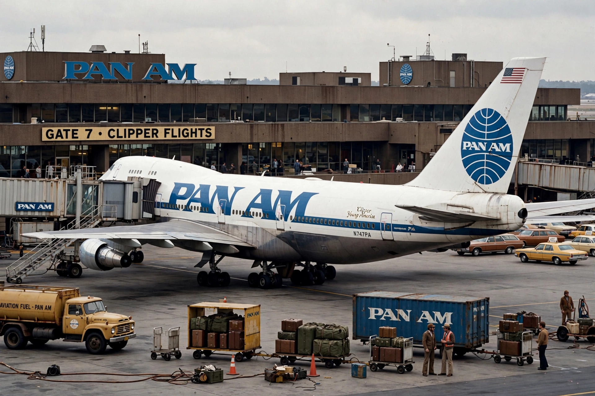

Pan Am
From Wikipedia, the free encyclopedia

Pan am (image regenerated from memory)
Pan American World Airways, originally Pan American Airways (commonly Pan Am), was the principal and largest international air carrier and unofficial overseas flag carrier of the United States for much of the 20th century. Founded in 1927 by Juan Trippe, it pioneered intercontinental routes with flying boats, launched the 707 and the 747, and made its globe logo and \'Clipper\' aircraft names symbols of glamorous travel — before deregulation, debt and the 1988 Lockerbie bombing of Flight 103 drove it to bankruptcy in 1991.
Rise
Trippe built Pan Am on airmail contracts from Key West–Havana (1927) into Latin America, then across the Pacific (China Clipper, 1935) and Atlantic with flying boats and landplanes. Barred from US domestic routes, it traded on international prestige: white-gloved service and the \'Clipper\' brand defined the golden age.
Jet age leadership
Pan Am launched both the 707 (1958) and the 747 (1970, whose size Trippe demanded). Its New York Worldport terminal and the Pan Am Building in Manhattan marked its zenith; the Beatles arrived in America on a Pan Am flight in 1964.
Decline and end
The 1970s oil shocks, over-ordering of 747s, deregulation (1978) — which left it without a domestic feed network — and asset sales (Pacific routes to United, 1985) hollowed the airline. The terrorist bombing of Flight 103 over Lockerbie, Scotland (21 December 1988, 270 deaths), shattered public confidence; Pan Am ceased operations on 4 December 1991. The brand survives in licensing and a 2020s heritage-rail venture.